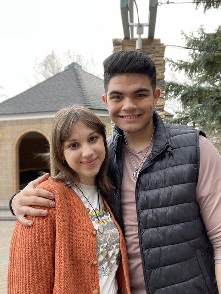
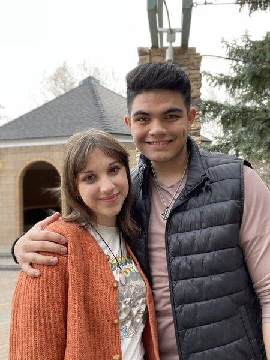

Pizza Fuego | August 2022
I worked here shortly after serving a religious mission. I learned the system and how to operate the register and was quickly promoted to be a closer. I was trusted with a key and regularly closed. I also counted, logged, and stored the money within the register.
Clear Insights | 2/3/23 - 3/18/23
I spent most my Winter 2023 semester working at Clear Insights. Clear Insights is a market research firm. I would call individuals and have them take surveys for a variety of organizations, on a variety of topics. I was a high performer and received a bonus within my first few weeks.
Element Hotel | 6/7/23 - 8/23/23 ... 4/23/24 - 8/30/24
I worked here for 2 summers on the overnight shift. I was responsible for hotel upkeep and fulfilling customer orders. I regularly answered questions and interacted with guests. I also acted as a security guard and occasionally had to diffuse heated situations.
BYU-I Support Center Digital Communications
This was the job I had whil studying. I worked for the Support Center of Brigham Young University-Idaho (or BSC). In the Digital Communications department we operated the back end of the chat bot and answered emails. I was a high perform and often recieved positive feedback from clients I helped.
 
